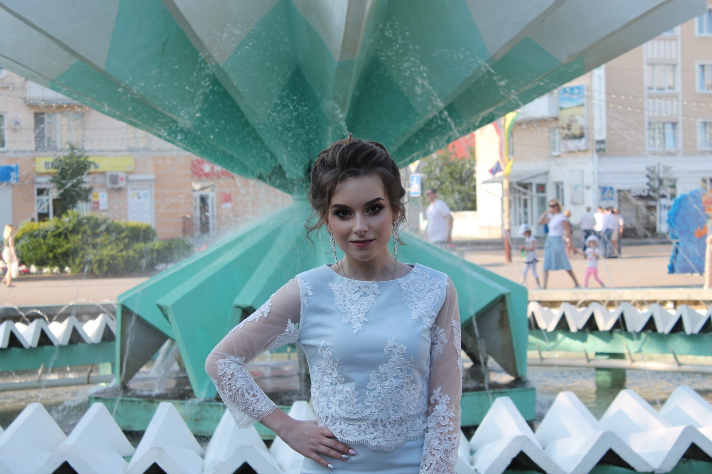

Кариночка Гринкевич
Уировская Белоснежка
«Уста алые, как розы. Кудри чёрные, как смоль. Кожа белая, как снег.»
Именно так описана наша Карина в одноимённой сказке немецких писателей братьев Гримм.
Белоснежка — невероятно прекрасная юная девушка, обладающая столь невероятной красотой. Несмотря на свою непосредственность и нежный нрав, Белоснежка порой бывает очень напористой. Она хорошо известна за свою доброту и оптимизм — оба эти качества, являясь её самыми сильными сторонами, помогают ей преодолевать различные трудности, с которыми она сталкивается на протяжении всей своей жизни.
Кроме того, наша уировская Белоснежка
- Невероятна скромна
- И рассудительна
- Решительна
- И сообразительна